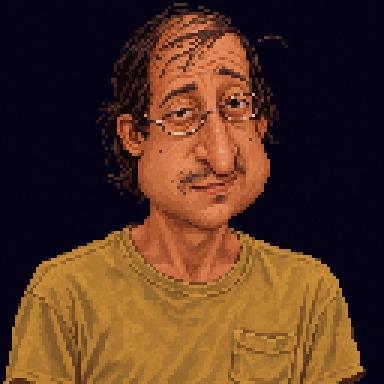

Victory

Same 128-pixel portrait scale as the game. These previews loop for review; each match reaction plays once.

Triggered by the first completed 100% survival result. Simultaneous 100% is a tie. The animation continues during the result pause.